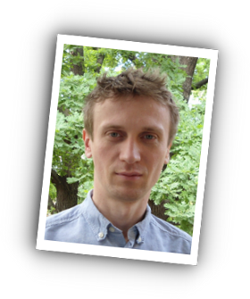

I am an outgoing and energetic person, seeking a career that fits my professional skills, personality, endless urge to investigate and learn functional programming(Scala, Haskell...maybe Lisp, Standard ML...).
- Experience
-
Evoline/Evosoft as Java Architect 2005 - Present
- Project: Design and implementation of an Eclipse based railway editor for the Railway Automation department of Siemens AG
- Languages: mainly Java, some XTend, HQL, SQL
- Technologies: Eclipse RCP (Rich Client Platform), EMF (Eclipse Modeling Framework), GEF (Graphical Editing Framework), Hibernate, Jasper Reports
- Version Control: Clearcase
- I'm proud of introducing the notion of Continouos Integration in the project: CruiseControl --> Hudson --> Jenkins
- Won the EvoRace (internal programming comtest) in 2009, third place in 2010
- Promoted as Architect in 2010
Eklos SA as C# Developer2004 - 2005
- Projects: Eklos as a Romanian-Italian company, we were designing and implementing 3-4 production tracking applications for GUCCI
- Languages: C#, J#, VB.Net
- Technologies: WinForms, ASP.Net
- Version Control: Visual SourceSafe (the worst of all of them)
MaxIQ SRL as Delphi/Java Junior Developer2001 - 2004
- Projects: internal custom applications for RomTelecom Bihor
- Languages: first in Delphi, then porting them to Java J2EE
- Technologies: Delphi RAD, JBoss, JSP, Oracle, Maven
- Version Control: CVS, SVN
-
- Education
-
University of Oradea 2003 - 2005
Faculty of Electrotechnics and Computer Science
MSc: Project Management
University of Oradea 1998 - 2003
Faculty of Electrotechnics and Computer Science
BSc: Computer Science
- Languages
-
Hungarianmother tongue
Romaniannative
Englishfluent
Germanbasic
- References
-
British Council Cambridge FCE
coursera.org Functional Programming Principles in Scala by M. Odersky
coursera.org Principles of Reactive Programming by M. Odersky et co
coursera.org Programming Languages by D. Grossmann
projecteuler.net/profile/tkarandi.png
github.com/karandit
- Hobbies
-
Continuous learningvim, haskell, scala, elm, elixir
Sportsrock bouldering, rock climbing, riding my GAUS wheel
Reading novels, watching TV series